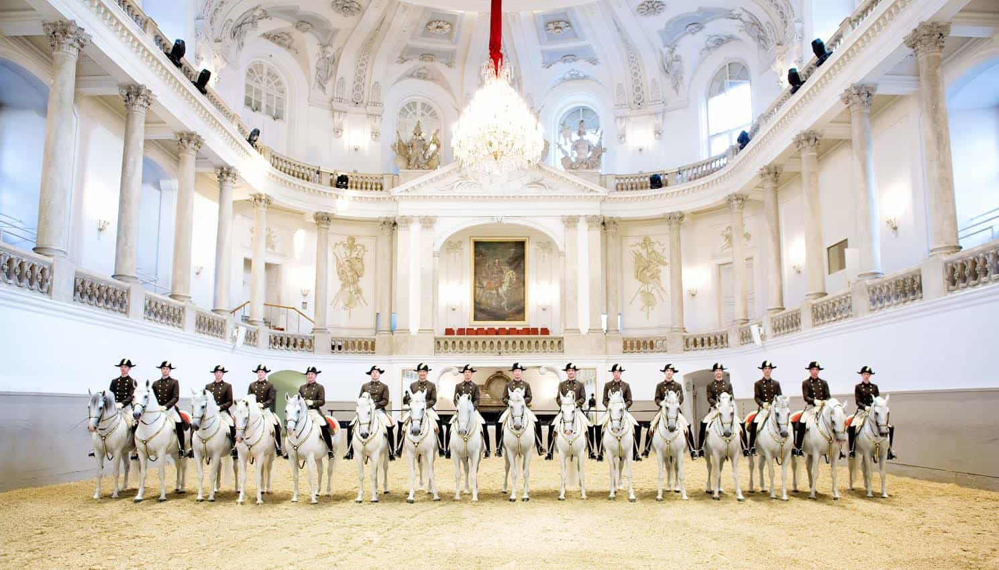

To emphasize the fact that men are more or less superior in science, inventions, jobs which require physical strength, and almost all sports, is too obvious, even though the equalists twist, turn and make intricate intellectual sommersaults in futile attempts to disprove these contentions.
Thus it is more interesting to look at less obvious areas, those that one may even associate with typically female qualities such as nurturing, empathy and dexterity, and which require only minimal physical strength.
I have listed four types of pursuit where men are, somewhat surprisingly, more or less better than women. Since I have focused on current times, these differences cannot be explained by lack of female opportunity.
1. Cooking
The housewife ideal is, needless to say, partly linked to the ability to cook. A significant share of men have complained that less women want to be good housewives these days and that cooking skills have worsened in the last decades. Manifold females present themselves as “foodies”, yet they do have little if any desire to make their own efforts into mastering the gastronomic art.
Nevertheless, whether or not one considers this a significant quality, one should not expect women to make better high-quality meals than men. Males are actually better at cooking. The most famous chefs in current times are pretty much all men. The picture just above clearly illustrates this.
2. Equestrian sports

Equestrian sports do not constitute a monolithic phenomenon. Thus there are, not surprisingly, overlaps and palpable sex differences within and between show jumping, dressage, eventing, as well as other less prestigious categories.
But given how many girls who are into horse riding as a hobby in comparison to males, for example about 78 percent in France, it is conspicuous that men often perform better competition-wise. Horse riding is of particular interest since it is one of few areas in which the two sexes compete on equal terms.
For instance, as expected there are more females in the world top of dressage, while there is a clear male dominance in show jumping and eventing. However, with regard to the last-mentioned category, many females place themselves just outside of the top ten.
Show jumping and eventing require particular skills, courage and assertiveness that enables more men to excel. Kent Farrington, Peter Thomsen, Abdullah bin Mutaib, Andreas Dibowski, Frank Ostholt, John Whitaker, Ludger Beerbaum, Marcus Ehning and Rodrigo Pessoa are but a few of the best men in these two fields.
Furthermore, albeit I would hesitate to call equestrian sports a form of art, there is actually some types of horse riding which can be regarded as such, advanced dressage in particular. The Spanish Riding School in Vienna, Austria, is largely dominated by males. I would highly recommend a visit there.
3. Ceramics

Ceramics might be associated with female pastime activity, but like other pursuits it can sometimes be viewed as a serious occupation or cultural manifestation. Is it really the case that the soft female hand is better to sculpt than that of the unfairer sex?
According to this list of contemporary ceramic artists the sexes are equal in excellence, whereas on this one six out of the top ten are males. Who could have guessed?
4. Songwriting
Males almost completely dominate the list over best modern popular music songwriters. Just by mentioning Swedish male pop songwriters such as Denniz Pop, Max Martin and Andreas Carlsson one can witness a considerable male dominance.
This becomes even more striking when one considers the richest songwriters of all time, and more contemporary individuals like for example Babyface, Ed Sheeran and Savan Cotecha.
Underlying factors
Although one can win an argument by stressing that males are on average smarter than women, IQ has little to do with differences in achievement in these non-physical pursuits.
Instead personaliy traits such as higher narcissism and slightly higher industriousness and assertiveness can partly explain these in equal societies. Further, higher levels of testosterone can perhaps directly or indirectly be part of the explanation as well, since it enables greater effort.
Men know that they have to work extra hard in order to become someone in the world and thus put in those extra hours of practice and energy in order to excel. There might be women who feel that they want to compensate for their lack of beauty – servus, Angela Merkel! – by means of being successful in other areas, such as medicine, art or politics. Nevertheless, generally speaking a woman can just be a woman and still find her place in society. Of course there are a lot of men who completely lack these personality traits and abilities, but it is the top talents and/or personality profiles that interest us here.
Moreover, many of these activities hinge on historical realities, such as art, music, and pre-modern equestrianism, where men likewise have excelled. However, that is no reason why females cannot succeed now.
Conclusion
Whenever something becomes a form of art, or at least more profound skill that requires focus, dedication and industriousness, men will likely excel. If Olympics in diaper changing existed I could bet that men would rule there as well.
The point is not assert that there are no overlaps between the sexes and that females are worthless outside of the stereotypical female activities such as basic child rearing and housekeeping, but rather that men often tend to perform better even in those fields which one tends to associate with the fairer sex.
Read More: Anything Women Can Do, Men Can Do Better